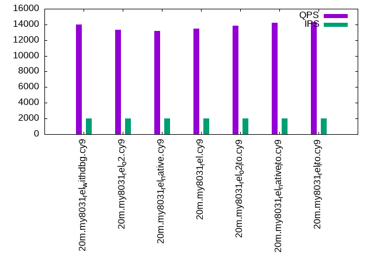

This is a report for the insert benchmark with 20M docs and 4 client(s). It is generated by scripts (bash, awk, sed) and Tufte might not be impressed. An overview of the insert benchmark is here and a short update is here. Below, by DBMS, I mean DBMS+version.config. An example is my8020.c10b40 where my means MySQL, 8020 is version 8.0.20 and c10b40 is the name for the configuration file.
The test server has 8 AMD cores, 16G RAM and an NVMe SSD. It is described here as the Beelink. The benchmark was run with 4 clients and there were 1 or 2 connections per client (1 for queries, 1 for inserts). The benchmark loads 20M rows without secondary indexes, creates secondary indexes, loads another 20M rows then does 3 read+write tests for one hour each that do queries as fast as possible with 100, 500 and then 1000 writes/second/client concurrent with the queries. There is 1 table. The database is cached by the storage engine and the only IO is for writes. Clients and the DBMS share one server. The per-database configs are in the per-database subdirectories here.
The tested DBMS are:
The numbers are inserts/s for l.i0 and l.i1, indexed docs (or rows) /s for l.x and queries/s for q*.2. The values are the average rate over the entire test for inserts (IPS) and queries (QPS). The range of values for IPS and QPS is split into 3 parts: bottom 25%, middle 50%, top 25%. Values in the bottom 25% have a red background, values in the top 25% have a green background and values in the middle have no color. A gray background is used for values that can be ignored because the DBMS did not sustain the target insert rate. Red backgrounds are not used when the minimum value is within 80% of the max value.
| dbms | l.i0 | l.x | l.i1 | q100.1 | q500.1 | q1000.1 |
|---|---|---|---|---|---|---|
| 20m.my8031_rel_withdbg.cy9 | 129032 | 148889 | 64309 | 14101 | 14008 | 13975 |
| 20m.my8031_rel_o2.cy9 | 125786 | 143571 | 61920 | 13288 | 13337 | 13182 |
| 20m.my8031_rel_native.cy9 | 127388 | 148889 | 63492 | 13375 | 13183 | 13128 |
| 20m.my8031_rel.cy9 | 128205 | 144604 | 63694 | 13444 | 13445 | 13284 |
| 20m.my8031_rel_o2_lto.cy9 | 128205 | 146715 | 64102 | 14030 | 13873 | 13790 |
| 20m.my8031_rel_native_lto.cy9 | 131579 | 159524 | 65359 | 14173 | 14182 | 13910 |
| 20m.my8031_rel_lto.cy9 | 127388 | 154615 | 64935 | 14297 | 14310 | 14239 |
This table has relative throughput, throughput for the DBMS relative to the DBMS in the first line, using the absolute throughput from the previous table.
| dbms | l.i0 | l.x | l.i1 | q100.1 | q500.1 | q1000.1 |
|---|---|---|---|---|---|---|
| 20m.my8031_rel_withdbg.cy9 | 1.00 | 1.00 | 1.00 | 1.00 | 1.00 | 1.00 |
| 20m.my8031_rel_o2.cy9 | 0.97 | 0.96 | 0.96 | 0.94 | 0.95 | 0.94 |
| 20m.my8031_rel_native.cy9 | 0.99 | 1.00 | 0.99 | 0.95 | 0.94 | 0.94 |
| 20m.my8031_rel.cy9 | 0.99 | 0.97 | 0.99 | 0.95 | 0.96 | 0.95 |
| 20m.my8031_rel_o2_lto.cy9 | 0.99 | 0.99 | 1.00 | 0.99 | 0.99 | 0.99 |
| 20m.my8031_rel_native_lto.cy9 | 1.02 | 1.07 | 1.02 | 1.01 | 1.01 | 1.00 |
| 20m.my8031_rel_lto.cy9 | 0.99 | 1.04 | 1.01 | 1.01 | 1.02 | 1.02 |
This lists the average rate of inserts/s for the tests that do inserts concurrent with queries. For such tests the query rate is listed in the table above. The read+write tests are setup so that the insert rate should match the target rate every second. Cells that are not at least 95% of the target have a red background to indicate a failure to satisfy the target.
| dbms | q100.1 | q500.1 | q1000.1 |
|---|---|---|---|
| my8031_rel_withdbg.cy9 | 399 | 1994 | 3987 |
| my8031_rel_o2.cy9 | 399 | 1994 | 3989 |
| my8031_rel_native.cy9 | 399 | 1994 | 3989 |
| my8031_rel.cy9 | 399 | 1994 | 3989 |
| my8031_rel_o2_lto.cy9 | 399 | 1994 | 3989 |
| my8031_rel_native_lto.cy9 | 399 | 1993 | 3989 |
| my8031_rel_lto.cy9 | 399 | 1994 | 3989 |
| target | 400 | 2000 | 4000 |
l.i0: load without secondary indexes. Graphs for performance per 1-second interval are here.
Average throughput:
Insert response time histogram: each cell has the percentage of responses that take <= the time in the header and max is the max response time in seconds. For the max column values in the top 25% of the range have a red background and in the bottom 25% of the range have a green background. The red background is not used when the min value is within 80% of the max value.
| dbms | 256us | 1ms | 4ms | 16ms | 64ms | 256ms | 1s | 4s | 16s | gt | max |
|---|---|---|---|---|---|---|---|---|---|---|---|
| my8031_rel_withdbg.cy9 | 97.903 | 1.121 | 0.962 | 0.013 | 0.133 | ||||||
| my8031_rel_o2.cy9 | 97.769 | 1.232 | 0.985 | 0.013 | 0.117 | ||||||
| my8031_rel_native.cy9 | 97.970 | 1.034 | 0.984 | 0.012 | 0.124 | ||||||
| my8031_rel.cy9 | 97.969 | 1.080 | 0.938 | 0.013 | 0.126 | ||||||
| my8031_rel_o2_lto.cy9 | 97.949 | 1.079 | 0.959 | 0.013 | 0.134 | ||||||
| my8031_rel_native_lto.cy9 | 98.024 | 1.011 | 0.951 | 0.013 | 0.119 | ||||||
| my8031_rel_lto.cy9 | 97.874 | 1.150 | 0.961 | 0.015 | 0.121 |
Performance metrics for the DBMS listed above. Some are normalized by throughput, others are not. Legend for results is here.
ips qps rps rmbps wps wmbps rpq rkbpq wpi wkbpi csps cpups cspq cpupq dbgb1 dbgb2 rss maxop p50 p99 tag 129032 0 0 0.0 454.3 51.9 0.000 0.000 0.004 0.412 13684 57.8 0.106 36 2.4 11.0 3.3 0.133 34663 7592 20m.my8031_rel_withdbg.cy9 125786 0 0 0.0 433.3 50.8 0.000 0.000 0.003 0.413 13314 58.3 0.106 37 2.4 11.0 3.3 0.117 33463 5494 20m.my8031_rel_o2.cy9 127388 0 0 0.0 437.8 51.4 0.000 0.000 0.003 0.413 13573 58.0 0.107 36 2.4 10.9 3.3 0.124 34177 26781 20m.my8031_rel_native.cy9 128205 0 0 0.0 446.2 51.6 0.000 0.000 0.003 0.412 13652 58.0 0.106 36 2.4 10.9 3.3 0.126 34562 29367 20m.my8031_rel.cy9 128205 0 0 0.0 448.3 51.8 0.000 0.000 0.003 0.414 13551 57.9 0.106 36 2.4 11.0 3.3 0.134 34462 28668 20m.my8031_rel_o2_lto.cy9 131579 0 0 0.0 447.9 52.9 0.000 0.000 0.003 0.411 13865 58.3 0.105 35 2.4 10.9 3.3 0.119 35376 28369 20m.my8031_rel_native_lto.cy9 127388 0 0 0.0 445.8 51.8 0.000 0.000 0.003 0.417 13647 58.1 0.107 36 2.4 11.0 3.3 0.121 34562 27070 20m.my8031_rel_lto.cy9
l.x: create secondary indexes.
Average throughput:
Performance metrics for the DBMS listed above. Some are normalized by throughput, others are not. Legend for results is here.
ips qps rps rmbps wps wmbps rpq rkbpq wpi wkbpi csps cpups cspq cpupq dbgb1 dbgb2 rss maxop p50 p99 tag 148889 0 768 51.4 2996.9 154.4 0.005 0.353 0.020 1.062 10809 42.1 0.073 23 4.0 12.6 4.7 0.011 NA NA 20m.my8031_rel_withdbg.cy9 143571 0 768 51.3 2045.7 140.8 0.005 0.366 0.014 1.004 8927 44.1 0.062 25 4.0 12.6 4.7 0.012 NA NA 20m.my8031_rel_o2.cy9 148889 0 797 53.4 2108.4 145.2 0.005 0.367 0.014 0.999 9212 43.8 0.062 24 4.0 12.6 4.6 0.016 NA NA 20m.my8031_rel_native.cy9 144604 0 768 51.4 2052.2 139.8 0.005 0.364 0.014 0.990 8825 43.9 0.061 24 4.0 12.6 4.6 0.019 NA NA 20m.my8031_rel.cy9 146715 0 768 51.4 2665.7 149.8 0.005 0.358 0.018 1.046 10088 43.5 0.069 24 4.0 12.6 4.6 0.014 NA NA 20m.my8031_rel_o2_lto.cy9 159524 0 830 55.5 3115.0 166.3 0.005 0.356 0.020 1.068 11364 42.6 0.071 21 4.0 12.6 4.5 0.017 NA NA 20m.my8031_rel_native_lto.cy9 154615 0 798 53.4 3133.5 161.3 0.005 0.353 0.020 1.068 11214 43.4 0.073 22 4.0 12.6 4.6 0.018 NA NA 20m.my8031_rel_lto.cy9
l.i1: continue load after secondary indexes created. Graphs for performance per 1-second interval are here.
Average throughput:
Insert response time histogram: each cell has the percentage of responses that take <= the time in the header and max is the max response time in seconds. For the max column values in the top 25% of the range have a red background and in the bottom 25% of the range have a green background. The red background is not used when the min value is within 80% of the max value.
| dbms | 256us | 1ms | 4ms | 16ms | 64ms | 256ms | 1s | 4s | 16s | gt | max |
|---|---|---|---|---|---|---|---|---|---|---|---|
| my8031_rel_withdbg.cy9 | 96.762 | 2.295 | 0.931 | 0.012 | 0.104 | ||||||
| my8031_rel_o2.cy9 | 96.590 | 2.473 | 0.919 | 0.018 | 0.104 | ||||||
| my8031_rel_native.cy9 | 96.785 | 2.323 | 0.871 | 0.021 | 0.104 | ||||||
| my8031_rel.cy9 | 96.739 | 2.333 | 0.896 | 0.032 | 0.104 | ||||||
| my8031_rel_o2_lto.cy9 | 96.742 | 2.353 | 0.890 | 0.015 | 0.104 | ||||||
| my8031_rel_native_lto.cy9 | 96.827 | 2.266 | 0.885 | 0.022 | 0.104 | ||||||
| my8031_rel_lto.cy9 | 96.805 | 2.267 | 0.909 | 0.020 | 0.104 |
Performance metrics for the DBMS listed above. Some are normalized by throughput, others are not. Legend for results is here.
ips qps rps rmbps wps wmbps rpq rkbpq wpi wkbpi csps cpups cspq cpupq dbgb1 dbgb2 rss maxop p50 p99 tag 64309 0 297 4.6 1850.7 94.0 0.005 0.074 0.029 1.496 19028 55.5 0.296 69 10.1 18.7 10.0 0.104 16981 849 20m.my8031_rel_withdbg.cy9 61920 0 288 4.5 1832.3 91.7 0.005 0.074 0.030 1.516 18277 54.5 0.295 70 10.1 18.7 10.0 0.104 16282 849 20m.my8031_rel_o2.cy9 63492 0 297 4.6 1850.2 93.1 0.005 0.075 0.029 1.501 18863 55.5 0.297 70 10.1 18.7 10.0 0.104 16781 849 20m.my8031_rel_native.cy9 63694 0 297 4.6 1844.2 92.8 0.005 0.075 0.029 1.491 18908 55.4 0.297 70 10.1 18.7 10.0 0.104 16682 799 20m.my8031_rel.cy9 64102 0 297 4.6 1855.1 93.9 0.005 0.074 0.029 1.500 18984 55.7 0.296 70 10.1 18.7 10.0 0.104 16788 849 20m.my8031_rel_o2_lto.cy9 65359 0 302 4.7 1865.3 95.2 0.005 0.074 0.029 1.492 19235 55.4 0.294 68 10.1 18.7 10.0 0.104 17130 849 20m.my8031_rel_native_lto.cy9 64935 0 302 4.7 1850.1 93.9 0.005 0.074 0.028 1.481 19226 55.4 0.296 68 10.1 18.7 10.0 0.104 16988 850 20m.my8031_rel_lto.cy9
q100.1: range queries with 100 insert/s per client. Graphs for performance per 1-second interval are here.
Average throughput:
Query response time histogram: each cell has the percentage of responses that take <= the time in the header and max is the max response time in seconds. For max values in the top 25% of the range have a red background and in the bottom 25% of the range have a green background. The red background is not used when the min value is within 80% of the max value.
| dbms | 256us | 1ms | 4ms | 16ms | 64ms | 256ms | 1s | 4s | 16s | gt | max |
|---|---|---|---|---|---|---|---|---|---|---|---|
| my8031_rel_withdbg.cy9 | 50.262 | 49.732 | 0.005 | 0.001 | nonzero | 0.021 | |||||
| my8031_rel_o2.cy9 | 41.726 | 58.268 | 0.006 | 0.001 | nonzero | 0.024 | |||||
| my8031_rel_native.cy9 | 42.794 | 57.200 | 0.005 | 0.001 | nonzero | 0.024 | |||||
| my8031_rel.cy9 | 43.274 | 56.720 | 0.005 | 0.001 | nonzero | 0.022 | |||||
| my8031_rel_o2_lto.cy9 | 49.142 | 50.852 | 0.005 | 0.001 | nonzero | 0.022 | |||||
| my8031_rel_native_lto.cy9 | 51.317 | 48.677 | 0.005 | 0.001 | nonzero | 0.022 | |||||
| my8031_rel_lto.cy9 | 52.909 | 47.085 | 0.006 | 0.001 | nonzero | 0.023 |
Insert response time histogram: each cell has the percentage of responses that take <= the time in the header and max is the max response time in seconds. For max values in the top 25% of the range have a red background and in the bottom 25% of the range have a green background. The red background is not used when the min value is within 80% of the max value.
| dbms | 256us | 1ms | 4ms | 16ms | 64ms | 256ms | 1s | 4s | 16s | gt | max |
|---|---|---|---|---|---|---|---|---|---|---|---|
| my8031_rel_withdbg.cy9 | 98.028 | 1.257 | 0.715 | 0.033 | |||||||
| my8031_rel_o2.cy9 | 97.951 | 1.250 | 0.799 | 0.028 | |||||||
| my8031_rel_native.cy9 | 98.493 | 0.840 | 0.667 | 0.028 | |||||||
| my8031_rel.cy9 | 97.986 | 1.403 | 0.611 | 0.025 | |||||||
| my8031_rel_o2_lto.cy9 | 98.174 | 0.993 | 0.833 | 0.029 | |||||||
| my8031_rel_native_lto.cy9 | 98.479 | 0.819 | 0.701 | 0.030 | |||||||
| my8031_rel_lto.cy9 | 98.021 | 1.243 | 0.736 | 0.029 |
Performance metrics for the DBMS listed above. Some are normalized by throughput, others are not. Legend for results is here.
ips qps rps rmbps wps wmbps rpq rkbpq wpi wkbpi csps cpups cspq cpupq dbgb1 dbgb2 rss maxop p50 p99 tag 399 14101 0 0.0 234.6 6.1 0.000 0.000 0.588 15.729 54571 50.1 3.870 284 10.5 19.1 10.3 0.021 3581 2893 20m.my8031_rel_withdbg.cy9 399 13288 0 0.0 237.8 6.2 0.000 0.000 0.596 15.975 51497 50.1 3.875 302 10.5 19.1 10.3 0.024 3324 2717 20m.my8031_rel_o2.cy9 399 13375 0 0.0 235.5 6.2 0.000 0.000 0.591 15.801 51827 50.0 3.875 299 10.5 19.1 10.3 0.024 3356 2733 20m.my8031_rel_native.cy9 399 13444 0 0.0 240.7 6.3 0.000 0.000 0.604 16.117 52092 50.1 3.875 298 10.5 19.1 10.3 0.022 3388 2797 20m.my8031_rel.cy9 399 14030 0 0.0 239.5 6.3 0.000 0.000 0.601 16.081 54309 50.1 3.871 286 10.5 19.1 10.3 0.022 3580 2925 20m.my8031_rel_o2_lto.cy9 399 14173 0 0.0 233.5 6.1 0.000 0.000 0.585 15.657 54856 50.0 3.870 282 10.5 19.1 10.3 0.022 3614 2941 20m.my8031_rel_native_lto.cy9 399 14297 0 0.0 238.4 6.2 0.000 0.000 0.598 16.001 55278 50.2 3.866 281 10.5 19.1 10.3 0.023 3630 2893 20m.my8031_rel_lto.cy9
q500.1: range queries with 500 insert/s per client. Graphs for performance per 1-second interval are here.
Average throughput:
Query response time histogram: each cell has the percentage of responses that take <= the time in the header and max is the max response time in seconds. For max values in the top 25% of the range have a red background and in the bottom 25% of the range have a green background. The red background is not used when the min value is within 80% of the max value.
| dbms | 256us | 1ms | 4ms | 16ms | 64ms | 256ms | 1s | 4s | 16s | gt | max |
|---|---|---|---|---|---|---|---|---|---|---|---|
| my8031_rel_withdbg.cy9 | 48.783 | 51.197 | 0.017 | 0.003 | nonzero | 0.040 | |||||
| my8031_rel_o2.cy9 | 41.970 | 58.010 | 0.017 | 0.003 | nonzero | 0.023 | |||||
| my8031_rel_native.cy9 | 39.827 | 60.152 | 0.018 | 0.003 | nonzero | 0.027 | |||||
| my8031_rel.cy9 | 43.082 | 56.898 | 0.017 | 0.003 | 0.001 | 0.025 | |||||
| my8031_rel_o2_lto.cy9 | 46.955 | 53.026 | 0.015 | 0.003 | 0.001 | 0.026 | |||||
| my8031_rel_native_lto.cy9 | 51.351 | 48.630 | 0.017 | 0.002 | nonzero | 0.022 | |||||
| my8031_rel_lto.cy9 | 52.435 | 47.546 | 0.016 | 0.002 | 0.001 | 0.022 |
Insert response time histogram: each cell has the percentage of responses that take <= the time in the header and max is the max response time in seconds. For max values in the top 25% of the range have a red background and in the bottom 25% of the range have a green background. The red background is not used when the min value is within 80% of the max value.
| dbms | 256us | 1ms | 4ms | 16ms | 64ms | 256ms | 1s | 4s | 16s | gt | max |
|---|---|---|---|---|---|---|---|---|---|---|---|
| my8031_rel_withdbg.cy9 | 94.340 | 4.881 | 0.722 | 0.057 | 0.108 | ||||||
| my8031_rel_o2.cy9 | 95.211 | 4.135 | 0.636 | 0.018 | 0.105 | ||||||
| my8031_rel_native.cy9 | 95.138 | 4.125 | 0.714 | 0.024 | 0.107 | ||||||
| my8031_rel.cy9 | 95.033 | 4.311 | 0.618 | 0.037 | 0.107 | ||||||
| my8031_rel_o2_lto.cy9 | 93.094 | 5.961 | 0.921 | 0.024 | 0.104 | ||||||
| my8031_rel_native_lto.cy9 | 97.493 | 2.056 | 0.438 | 0.014 | 0.103 | ||||||
| my8031_rel_lto.cy9 | 96.001 | 3.360 | 0.615 | 0.024 | 0.105 |
Performance metrics for the DBMS listed above. Some are normalized by throughput, others are not. Legend for results is here.
ips qps rps rmbps wps wmbps rpq rkbpq wpi wkbpi csps cpups cspq cpupq dbgb1 dbgb2 rss maxop p50 p99 tag 1994 14008 0 0.0 226.9 6.9 0.000 0.000 0.114 3.525 53666 51.2 3.831 292 11.4 20.0 11.0 0.040 3484 2861 20m.my8031_rel_withdbg.cy9 1994 13337 0 0.0 221.0 6.7 0.000 0.000 0.111 3.436 51145 51.2 3.835 307 11.4 20.0 11.0 0.023 3294 2733 20m.my8031_rel_o2.cy9 1994 13183 0 0.0 223.9 6.8 0.000 0.000 0.112 3.469 50564 51.1 3.835 310 11.4 19.9 11.0 0.027 3356 2751 20m.my8031_rel_native.cy9 1994 13445 0 0.0 222.0 6.7 0.000 0.000 0.111 3.455 51553 51.2 3.834 305 11.4 19.9 10.9 0.025 3340 2749 20m.my8031_rel.cy9 1994 13873 0 0.0 226.0 6.8 0.000 0.000 0.113 3.509 53118 51.2 3.829 295 11.4 20.0 11.0 0.026 3484 2878 20m.my8031_rel_o2_lto.cy9 1993 14182 0 0.0 221.3 6.7 0.000 0.000 0.111 3.423 54456 51.0 3.840 288 11.3 19.9 10.9 0.022 3582 2942 20m.my8031_rel_native_lto.cy9 1994 14310 0 0.0 221.7 6.7 0.000 0.000 0.111 3.437 54860 51.1 3.834 286 11.4 20.0 11.0 0.022 3628 2925 20m.my8031_rel_lto.cy9
q1000.1: range queries with 1000 insert/s per client. Graphs for performance per 1-second interval are here.
Average throughput:
Query response time histogram: each cell has the percentage of responses that take <= the time in the header and max is the max response time in seconds. For max values in the top 25% of the range have a red background and in the bottom 25% of the range have a green background. The red background is not used when the min value is within 80% of the max value.
| dbms | 256us | 1ms | 4ms | 16ms | 64ms | 256ms | 1s | 4s | 16s | gt | max |
|---|---|---|---|---|---|---|---|---|---|---|---|
| my8031_rel_withdbg.cy9 | 47.832 | 52.127 | 0.035 | 0.005 | 0.001 | 0.026 | |||||
| my8031_rel_o2.cy9 | 38.850 | 61.108 | 0.036 | 0.006 | 0.001 | 0.026 | |||||
| my8031_rel_native.cy9 | 38.215 | 61.738 | 0.041 | 0.005 | 0.001 | 0.028 | |||||
| my8031_rel.cy9 | 40.074 | 59.885 | 0.035 | 0.005 | nonzero | 0.022 | |||||
| my8031_rel_o2_lto.cy9 | 45.676 | 54.283 | 0.035 | 0.005 | 0.001 | 0.024 | |||||
| my8031_rel_native_lto.cy9 | 47.252 | 52.713 | 0.030 | 0.005 | 0.001 | 0.025 | |||||
| my8031_rel_lto.cy9 | 51.353 | 48.606 | 0.035 | 0.005 | nonzero | 0.023 |
Insert response time histogram: each cell has the percentage of responses that take <= the time in the header and max is the max response time in seconds. For max values in the top 25% of the range have a red background and in the bottom 25% of the range have a green background. The red background is not used when the min value is within 80% of the max value.
| dbms | 256us | 1ms | 4ms | 16ms | 64ms | 256ms | 1s | 4s | 16s | gt | max |
|---|---|---|---|---|---|---|---|---|---|---|---|
| my8031_rel_withdbg.cy9 | 96.638 | 2.950 | 0.401 | 0.010 | 0.106 | ||||||
| my8031_rel_o2.cy9 | 94.281 | 5.258 | 0.438 | 0.024 | 0.108 | ||||||
| my8031_rel_native.cy9 | 96.524 | 3.112 | 0.358 | 0.006 | 0.106 | ||||||
| my8031_rel.cy9 | 95.424 | 4.120 | 0.420 | 0.036 | 0.112 | ||||||
| my8031_rel_o2_lto.cy9 | 95.917 | 3.740 | 0.333 | 0.010 | 0.105 | ||||||
| my8031_rel_native_lto.cy9 | 93.794 | 5.615 | 0.572 | 0.019 | 0.107 | ||||||
| my8031_rel_lto.cy9 | 96.752 | 2.896 | 0.342 | 0.010 | 0.105 |
Performance metrics for the DBMS listed above. Some are normalized by throughput, others are not. Legend for results is here.
ips qps rps rmbps wps wmbps rpq rkbpq wpi wkbpi csps cpups cspq cpupq dbgb1 dbgb2 rss maxop p50 p99 tag 3987 13975 1 0.0 389.7 11.8 0.000 0.002 0.098 3.029 53167 52.6 3.804 301 12.7 21.3 11.1 0.026 3468 2877 20m.my8031_rel_withdbg.cy9 3989 13182 2 0.0 394.5 11.9 0.000 0.002 0.099 3.065 50070 52.6 3.798 319 12.8 21.3 11.1 0.026 3308 2717 20m.my8031_rel_o2.cy9 3989 13128 1 0.0 383.9 11.6 0.000 0.002 0.096 2.983 50038 52.5 3.812 320 12.7 21.3 11.1 0.028 3244 2733 20m.my8031_rel_native.cy9 3989 13284 1 0.0 396.8 12.0 0.000 0.002 0.099 3.077 50528 52.7 3.804 317 12.7 21.3 11.1 0.022 3278 2797 20m.my8031_rel.cy9 3989 13790 1 0.0 386.8 11.7 0.000 0.002 0.097 3.004 52421 52.7 3.801 306 12.7 21.3 11.1 0.024 3404 2845 20m.my8031_rel_o2_lto.cy9 3989 13910 2 0.0 395.2 12.0 0.000 0.002 0.099 3.080 52858 52.6 3.800 303 12.8 21.3 11.1 0.025 3454 2893 20m.my8031_rel_native_lto.cy9 3989 14239 1 0.0 386.9 11.7 0.000 0.002 0.097 3.006 54234 52.6 3.809 296 12.7 21.3 11.1 0.023 3580 2973 20m.my8031_rel_lto.cy9
l.i0: load without secondary indexes
Performance metrics for all DBMS, not just the ones listed above. Some are normalized by throughput, others are not. Legend for results is here.
ips qps rps rmbps wps wmbps rpq rkbpq wpi wkbpi csps cpups cspq cpupq dbgb1 dbgb2 rss maxop p50 p99 tag 129032 0 0 0.0 454.3 51.9 0.000 0.000 0.004 0.412 13684 57.8 0.106 36 2.4 11.0 3.3 0.133 34663 7592 20m.my8031_rel_withdbg.cy9 125786 0 0 0.0 433.3 50.8 0.000 0.000 0.003 0.413 13314 58.3 0.106 37 2.4 11.0 3.3 0.117 33463 5494 20m.my8031_rel_o2.cy9 127388 0 0 0.0 437.8 51.4 0.000 0.000 0.003 0.413 13573 58.0 0.107 36 2.4 10.9 3.3 0.124 34177 26781 20m.my8031_rel_native.cy9 128205 0 0 0.0 446.2 51.6 0.000 0.000 0.003 0.412 13652 58.0 0.106 36 2.4 10.9 3.3 0.126 34562 29367 20m.my8031_rel.cy9 128205 0 0 0.0 448.3 51.8 0.000 0.000 0.003 0.414 13551 57.9 0.106 36 2.4 11.0 3.3 0.134 34462 28668 20m.my8031_rel_o2_lto.cy9 131579 0 0 0.0 447.9 52.9 0.000 0.000 0.003 0.411 13865 58.3 0.105 35 2.4 10.9 3.3 0.119 35376 28369 20m.my8031_rel_native_lto.cy9 127388 0 0 0.0 445.8 51.8 0.000 0.000 0.003 0.417 13647 58.1 0.107 36 2.4 11.0 3.3 0.121 34562 27070 20m.my8031_rel_lto.cy9
l.x: create secondary indexes
Performance metrics for all DBMS, not just the ones listed above. Some are normalized by throughput, others are not. Legend for results is here.
ips qps rps rmbps wps wmbps rpq rkbpq wpi wkbpi csps cpups cspq cpupq dbgb1 dbgb2 rss maxop p50 p99 tag 148889 0 768 51.4 2996.9 154.4 0.005 0.353 0.020 1.062 10809 42.1 0.073 23 4.0 12.6 4.7 0.011 NA NA 20m.my8031_rel_withdbg.cy9 143571 0 768 51.3 2045.7 140.8 0.005 0.366 0.014 1.004 8927 44.1 0.062 25 4.0 12.6 4.7 0.012 NA NA 20m.my8031_rel_o2.cy9 148889 0 797 53.4 2108.4 145.2 0.005 0.367 0.014 0.999 9212 43.8 0.062 24 4.0 12.6 4.6 0.016 NA NA 20m.my8031_rel_native.cy9 144604 0 768 51.4 2052.2 139.8 0.005 0.364 0.014 0.990 8825 43.9 0.061 24 4.0 12.6 4.6 0.019 NA NA 20m.my8031_rel.cy9 146715 0 768 51.4 2665.7 149.8 0.005 0.358 0.018 1.046 10088 43.5 0.069 24 4.0 12.6 4.6 0.014 NA NA 20m.my8031_rel_o2_lto.cy9 159524 0 830 55.5 3115.0 166.3 0.005 0.356 0.020 1.068 11364 42.6 0.071 21 4.0 12.6 4.5 0.017 NA NA 20m.my8031_rel_native_lto.cy9 154615 0 798 53.4 3133.5 161.3 0.005 0.353 0.020 1.068 11214 43.4 0.073 22 4.0 12.6 4.6 0.018 NA NA 20m.my8031_rel_lto.cy9
l.i1: continue load after secondary indexes created
Performance metrics for all DBMS, not just the ones listed above. Some are normalized by throughput, others are not. Legend for results is here.
ips qps rps rmbps wps wmbps rpq rkbpq wpi wkbpi csps cpups cspq cpupq dbgb1 dbgb2 rss maxop p50 p99 tag 64309 0 297 4.6 1850.7 94.0 0.005 0.074 0.029 1.496 19028 55.5 0.296 69 10.1 18.7 10.0 0.104 16981 849 20m.my8031_rel_withdbg.cy9 61920 0 288 4.5 1832.3 91.7 0.005 0.074 0.030 1.516 18277 54.5 0.295 70 10.1 18.7 10.0 0.104 16282 849 20m.my8031_rel_o2.cy9 63492 0 297 4.6 1850.2 93.1 0.005 0.075 0.029 1.501 18863 55.5 0.297 70 10.1 18.7 10.0 0.104 16781 849 20m.my8031_rel_native.cy9 63694 0 297 4.6 1844.2 92.8 0.005 0.075 0.029 1.491 18908 55.4 0.297 70 10.1 18.7 10.0 0.104 16682 799 20m.my8031_rel.cy9 64102 0 297 4.6 1855.1 93.9 0.005 0.074 0.029 1.500 18984 55.7 0.296 70 10.1 18.7 10.0 0.104 16788 849 20m.my8031_rel_o2_lto.cy9 65359 0 302 4.7 1865.3 95.2 0.005 0.074 0.029 1.492 19235 55.4 0.294 68 10.1 18.7 10.0 0.104 17130 849 20m.my8031_rel_native_lto.cy9 64935 0 302 4.7 1850.1 93.9 0.005 0.074 0.028 1.481 19226 55.4 0.296 68 10.1 18.7 10.0 0.104 16988 850 20m.my8031_rel_lto.cy9
q100.1: range queries with 100 insert/s per client
Performance metrics for all DBMS, not just the ones listed above. Some are normalized by throughput, others are not. Legend for results is here.
ips qps rps rmbps wps wmbps rpq rkbpq wpi wkbpi csps cpups cspq cpupq dbgb1 dbgb2 rss maxop p50 p99 tag 399 14101 0 0.0 234.6 6.1 0.000 0.000 0.588 15.729 54571 50.1 3.870 284 10.5 19.1 10.3 0.021 3581 2893 20m.my8031_rel_withdbg.cy9 399 13288 0 0.0 237.8 6.2 0.000 0.000 0.596 15.975 51497 50.1 3.875 302 10.5 19.1 10.3 0.024 3324 2717 20m.my8031_rel_o2.cy9 399 13375 0 0.0 235.5 6.2 0.000 0.000 0.591 15.801 51827 50.0 3.875 299 10.5 19.1 10.3 0.024 3356 2733 20m.my8031_rel_native.cy9 399 13444 0 0.0 240.7 6.3 0.000 0.000 0.604 16.117 52092 50.1 3.875 298 10.5 19.1 10.3 0.022 3388 2797 20m.my8031_rel.cy9 399 14030 0 0.0 239.5 6.3 0.000 0.000 0.601 16.081 54309 50.1 3.871 286 10.5 19.1 10.3 0.022 3580 2925 20m.my8031_rel_o2_lto.cy9 399 14173 0 0.0 233.5 6.1 0.000 0.000 0.585 15.657 54856 50.0 3.870 282 10.5 19.1 10.3 0.022 3614 2941 20m.my8031_rel_native_lto.cy9 399 14297 0 0.0 238.4 6.2 0.000 0.000 0.598 16.001 55278 50.2 3.866 281 10.5 19.1 10.3 0.023 3630 2893 20m.my8031_rel_lto.cy9
q500.1: range queries with 500 insert/s per client
Performance metrics for all DBMS, not just the ones listed above. Some are normalized by throughput, others are not. Legend for results is here.
ips qps rps rmbps wps wmbps rpq rkbpq wpi wkbpi csps cpups cspq cpupq dbgb1 dbgb2 rss maxop p50 p99 tag 1994 14008 0 0.0 226.9 6.9 0.000 0.000 0.114 3.525 53666 51.2 3.831 292 11.4 20.0 11.0 0.040 3484 2861 20m.my8031_rel_withdbg.cy9 1994 13337 0 0.0 221.0 6.7 0.000 0.000 0.111 3.436 51145 51.2 3.835 307 11.4 20.0 11.0 0.023 3294 2733 20m.my8031_rel_o2.cy9 1994 13183 0 0.0 223.9 6.8 0.000 0.000 0.112 3.469 50564 51.1 3.835 310 11.4 19.9 11.0 0.027 3356 2751 20m.my8031_rel_native.cy9 1994 13445 0 0.0 222.0 6.7 0.000 0.000 0.111 3.455 51553 51.2 3.834 305 11.4 19.9 10.9 0.025 3340 2749 20m.my8031_rel.cy9 1994 13873 0 0.0 226.0 6.8 0.000 0.000 0.113 3.509 53118 51.2 3.829 295 11.4 20.0 11.0 0.026 3484 2878 20m.my8031_rel_o2_lto.cy9 1993 14182 0 0.0 221.3 6.7 0.000 0.000 0.111 3.423 54456 51.0 3.840 288 11.3 19.9 10.9 0.022 3582 2942 20m.my8031_rel_native_lto.cy9 1994 14310 0 0.0 221.7 6.7 0.000 0.000 0.111 3.437 54860 51.1 3.834 286 11.4 20.0 11.0 0.022 3628 2925 20m.my8031_rel_lto.cy9
q1000.1: range queries with 1000 insert/s per client
Performance metrics for all DBMS, not just the ones listed above. Some are normalized by throughput, others are not. Legend for results is here.
ips qps rps rmbps wps wmbps rpq rkbpq wpi wkbpi csps cpups cspq cpupq dbgb1 dbgb2 rss maxop p50 p99 tag 3987 13975 1 0.0 389.7 11.8 0.000 0.002 0.098 3.029 53167 52.6 3.804 301 12.7 21.3 11.1 0.026 3468 2877 20m.my8031_rel_withdbg.cy9 3989 13182 2 0.0 394.5 11.9 0.000 0.002 0.099 3.065 50070 52.6 3.798 319 12.8 21.3 11.1 0.026 3308 2717 20m.my8031_rel_o2.cy9 3989 13128 1 0.0 383.9 11.6 0.000 0.002 0.096 2.983 50038 52.5 3.812 320 12.7 21.3 11.1 0.028 3244 2733 20m.my8031_rel_native.cy9 3989 13284 1 0.0 396.8 12.0 0.000 0.002 0.099 3.077 50528 52.7 3.804 317 12.7 21.3 11.1 0.022 3278 2797 20m.my8031_rel.cy9 3989 13790 1 0.0 386.8 11.7 0.000 0.002 0.097 3.004 52421 52.7 3.801 306 12.7 21.3 11.1 0.024 3404 2845 20m.my8031_rel_o2_lto.cy9 3989 13910 2 0.0 395.2 12.0 0.000 0.002 0.099 3.080 52858 52.6 3.800 303 12.8 21.3 11.1 0.025 3454 2893 20m.my8031_rel_native_lto.cy9 3989 14239 1 0.0 386.9 11.7 0.000 0.002 0.097 3.006 54234 52.6 3.809 296 12.7 21.3 11.1 0.023 3580 2973 20m.my8031_rel_lto.cy9
Insert response time histogram
256us 1ms 4ms 16ms 64ms 256ms 1s 4s 16s gt max tag 0.000 0.000 97.903 1.121 0.962 0.013 0.000 0.000 0.000 0.000 0.133 my8031_rel_withdbg.cy9 0.000 0.000 97.769 1.232 0.985 0.013 0.000 0.000 0.000 0.000 0.117 my8031_rel_o2.cy9 0.000 0.000 97.970 1.034 0.984 0.012 0.000 0.000 0.000 0.000 0.124 my8031_rel_native.cy9 0.000 0.000 97.969 1.080 0.938 0.013 0.000 0.000 0.000 0.000 0.126 my8031_rel.cy9 0.000 0.000 97.949 1.079 0.959 0.013 0.000 0.000 0.000 0.000 0.134 my8031_rel_o2_lto.cy9 0.000 0.000 98.024 1.011 0.951 0.013 0.000 0.000 0.000 0.000 0.119 my8031_rel_native_lto.cy9 0.000 0.000 97.874 1.150 0.961 0.015 0.000 0.000 0.000 0.000 0.121 my8031_rel_lto.cy9
TODO - determine whether there is data for create index response time
Insert response time histogram
256us 1ms 4ms 16ms 64ms 256ms 1s 4s 16s gt max tag 0.000 0.000 96.762 2.295 0.931 0.012 0.000 0.000 0.000 0.000 0.104 my8031_rel_withdbg.cy9 0.000 0.000 96.590 2.473 0.919 0.018 0.000 0.000 0.000 0.000 0.104 my8031_rel_o2.cy9 0.000 0.000 96.785 2.323 0.871 0.021 0.000 0.000 0.000 0.000 0.104 my8031_rel_native.cy9 0.000 0.000 96.739 2.333 0.896 0.032 0.000 0.000 0.000 0.000 0.104 my8031_rel.cy9 0.000 0.000 96.742 2.353 0.890 0.015 0.000 0.000 0.000 0.000 0.104 my8031_rel_o2_lto.cy9 0.000 0.000 96.827 2.266 0.885 0.022 0.000 0.000 0.000 0.000 0.104 my8031_rel_native_lto.cy9 0.000 0.000 96.805 2.267 0.909 0.020 0.000 0.000 0.000 0.000 0.104 my8031_rel_lto.cy9
Query response time histogram
256us 1ms 4ms 16ms 64ms 256ms 1s 4s 16s gt max tag 50.262 49.732 0.005 0.001 nonzero 0.000 0.000 0.000 0.000 0.000 0.021 my8031_rel_withdbg.cy9 41.726 58.268 0.006 0.001 nonzero 0.000 0.000 0.000 0.000 0.000 0.024 my8031_rel_o2.cy9 42.794 57.200 0.005 0.001 nonzero 0.000 0.000 0.000 0.000 0.000 0.024 my8031_rel_native.cy9 43.274 56.720 0.005 0.001 nonzero 0.000 0.000 0.000 0.000 0.000 0.022 my8031_rel.cy9 49.142 50.852 0.005 0.001 nonzero 0.000 0.000 0.000 0.000 0.000 0.022 my8031_rel_o2_lto.cy9 51.317 48.677 0.005 0.001 nonzero 0.000 0.000 0.000 0.000 0.000 0.022 my8031_rel_native_lto.cy9 52.909 47.085 0.006 0.001 nonzero 0.000 0.000 0.000 0.000 0.000 0.023 my8031_rel_lto.cy9
Insert response time histogram
256us 1ms 4ms 16ms 64ms 256ms 1s 4s 16s gt max tag 0.000 0.000 98.028 1.257 0.715 0.000 0.000 0.000 0.000 0.000 0.033 my8031_rel_withdbg.cy9 0.000 0.000 97.951 1.250 0.799 0.000 0.000 0.000 0.000 0.000 0.028 my8031_rel_o2.cy9 0.000 0.000 98.493 0.840 0.667 0.000 0.000 0.000 0.000 0.000 0.028 my8031_rel_native.cy9 0.000 0.000 97.986 1.403 0.611 0.000 0.000 0.000 0.000 0.000 0.025 my8031_rel.cy9 0.000 0.000 98.174 0.993 0.833 0.000 0.000 0.000 0.000 0.000 0.029 my8031_rel_o2_lto.cy9 0.000 0.000 98.479 0.819 0.701 0.000 0.000 0.000 0.000 0.000 0.030 my8031_rel_native_lto.cy9 0.000 0.000 98.021 1.243 0.736 0.000 0.000 0.000 0.000 0.000 0.029 my8031_rel_lto.cy9
Query response time histogram
256us 1ms 4ms 16ms 64ms 256ms 1s 4s 16s gt max tag 48.783 51.197 0.017 0.003 nonzero 0.000 0.000 0.000 0.000 0.000 0.040 my8031_rel_withdbg.cy9 41.970 58.010 0.017 0.003 nonzero 0.000 0.000 0.000 0.000 0.000 0.023 my8031_rel_o2.cy9 39.827 60.152 0.018 0.003 nonzero 0.000 0.000 0.000 0.000 0.000 0.027 my8031_rel_native.cy9 43.082 56.898 0.017 0.003 0.001 0.000 0.000 0.000 0.000 0.000 0.025 my8031_rel.cy9 46.955 53.026 0.015 0.003 0.001 0.000 0.000 0.000 0.000 0.000 0.026 my8031_rel_o2_lto.cy9 51.351 48.630 0.017 0.002 nonzero 0.000 0.000 0.000 0.000 0.000 0.022 my8031_rel_native_lto.cy9 52.435 47.546 0.016 0.002 0.001 0.000 0.000 0.000 0.000 0.000 0.022 my8031_rel_lto.cy9
Insert response time histogram
256us 1ms 4ms 16ms 64ms 256ms 1s 4s 16s gt max tag 0.000 0.000 94.340 4.881 0.722 0.057 0.000 0.000 0.000 0.000 0.108 my8031_rel_withdbg.cy9 0.000 0.000 95.211 4.135 0.636 0.018 0.000 0.000 0.000 0.000 0.105 my8031_rel_o2.cy9 0.000 0.000 95.138 4.125 0.714 0.024 0.000 0.000 0.000 0.000 0.107 my8031_rel_native.cy9 0.000 0.000 95.033 4.311 0.618 0.037 0.000 0.000 0.000 0.000 0.107 my8031_rel.cy9 0.000 0.000 93.094 5.961 0.921 0.024 0.000 0.000 0.000 0.000 0.104 my8031_rel_o2_lto.cy9 0.000 0.000 97.493 2.056 0.438 0.014 0.000 0.000 0.000 0.000 0.103 my8031_rel_native_lto.cy9 0.000 0.000 96.001 3.360 0.615 0.024 0.000 0.000 0.000 0.000 0.105 my8031_rel_lto.cy9
Query response time histogram
256us 1ms 4ms 16ms 64ms 256ms 1s 4s 16s gt max tag 47.832 52.127 0.035 0.005 0.001 0.000 0.000 0.000 0.000 0.000 0.026 my8031_rel_withdbg.cy9 38.850 61.108 0.036 0.006 0.001 0.000 0.000 0.000 0.000 0.000 0.026 my8031_rel_o2.cy9 38.215 61.738 0.041 0.005 0.001 0.000 0.000 0.000 0.000 0.000 0.028 my8031_rel_native.cy9 40.074 59.885 0.035 0.005 nonzero 0.000 0.000 0.000 0.000 0.000 0.022 my8031_rel.cy9 45.676 54.283 0.035 0.005 0.001 0.000 0.000 0.000 0.000 0.000 0.024 my8031_rel_o2_lto.cy9 47.252 52.713 0.030 0.005 0.001 0.000 0.000 0.000 0.000 0.000 0.025 my8031_rel_native_lto.cy9 51.353 48.606 0.035 0.005 nonzero 0.000 0.000 0.000 0.000 0.000 0.023 my8031_rel_lto.cy9
Insert response time histogram
256us 1ms 4ms 16ms 64ms 256ms 1s 4s 16s gt max tag 0.000 0.000 96.638 2.950 0.401 0.010 0.000 0.000 0.000 0.000 0.106 my8031_rel_withdbg.cy9 0.000 0.000 94.281 5.258 0.438 0.024 0.000 0.000 0.000 0.000 0.108 my8031_rel_o2.cy9 0.000 0.000 96.524 3.112 0.358 0.006 0.000 0.000 0.000 0.000 0.106 my8031_rel_native.cy9 0.000 0.000 95.424 4.120 0.420 0.036 0.000 0.000 0.000 0.000 0.112 my8031_rel.cy9 0.000 0.000 95.917 3.740 0.333 0.010 0.000 0.000 0.000 0.000 0.105 my8031_rel_o2_lto.cy9 0.000 0.000 93.794 5.615 0.572 0.019 0.000 0.000 0.000 0.000 0.107 my8031_rel_native_lto.cy9 0.000 0.000 96.752 2.896 0.342 0.010 0.000 0.000 0.000 0.000 0.105 my8031_rel_lto.cy9